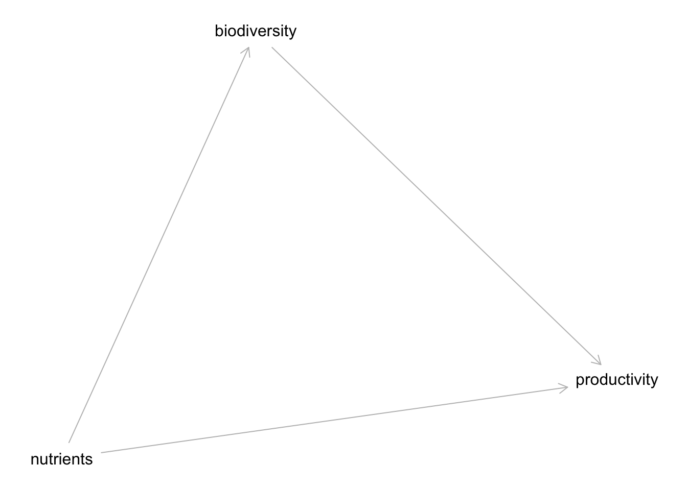
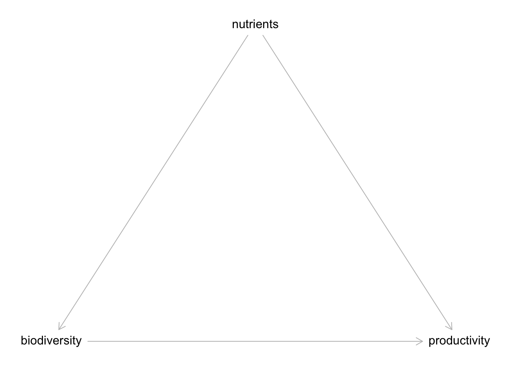
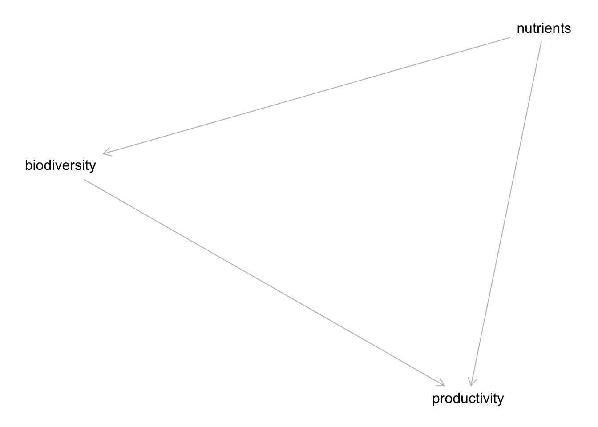
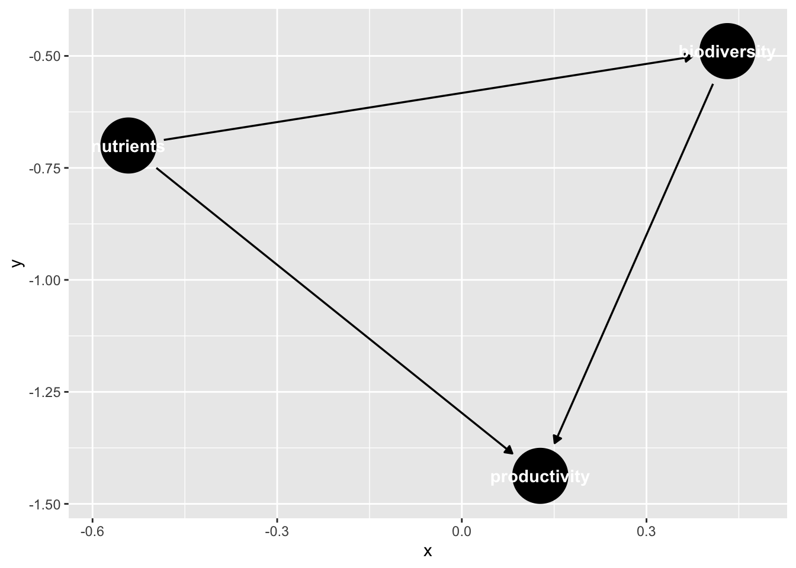
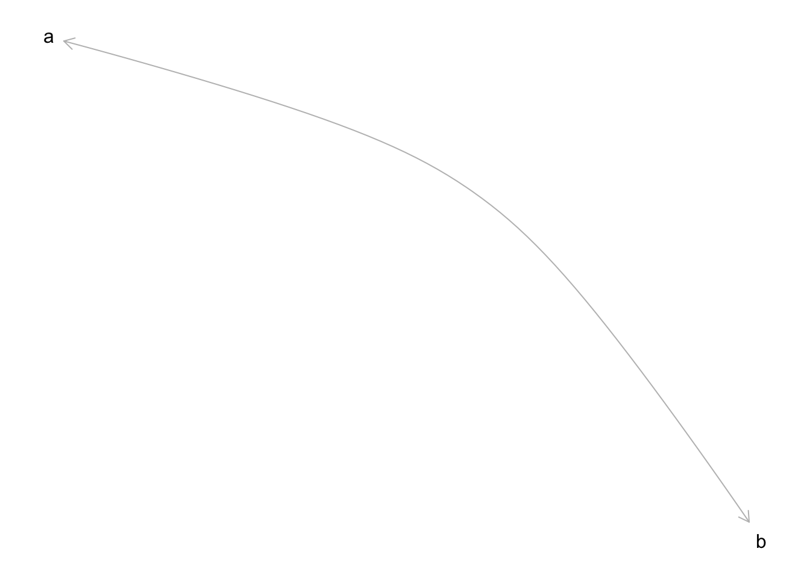
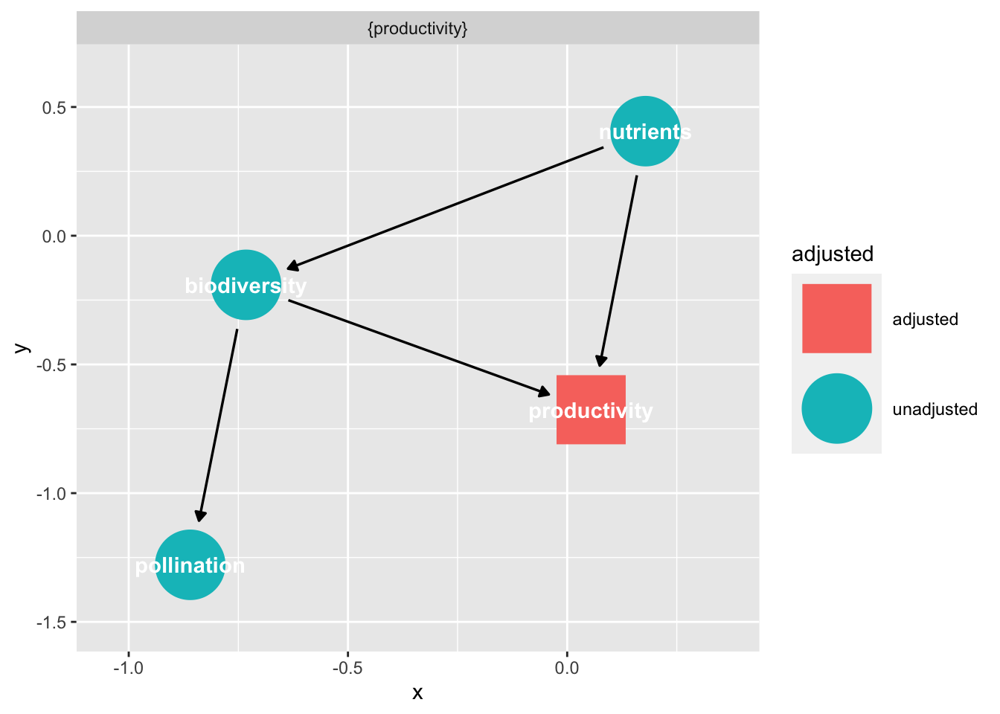
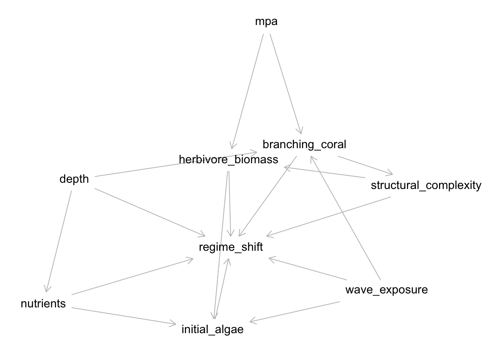
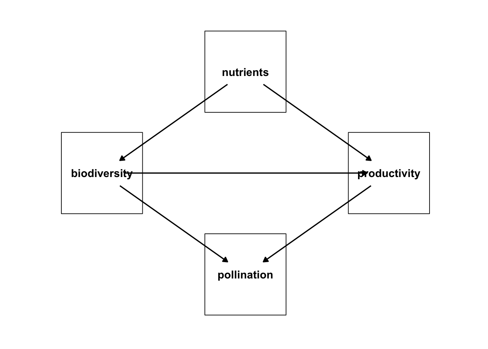

pacman::p_load("dagitty")Directed Acyclic Graphs in R with dagitty and ggdag
DAGitty
DAGitty is a wonderful platform that utilizes the graph properties of DAGs in order to determine key insights about the causal structure of the graphs in order to build causally identified statistical models. It has a web interface at https://www.dagitty.net/ as well as an R package. The R package also plays well with tidygraph, ggdag, ggrpah and others. Let’s take a look at DAGs in R with these tools.
First, let’s load up DAGitty and create a simple DAG for three variables - biodiversity, nutrients, and productivity. Here, biodiversity and nutrients influence productivity. Nutrients also influence biodiversity.
Now, we can build a DAG in a few ways. One is to use a -> notation specifying we are working with a DAG.
bef_dag <- dagitty("dag{
nutrients -> biodiversity -> productivity
nutrients -> productivity}
")
bef_dagdag {
biodiversity
nutrients
productivity
biodiversity -> productivity
nutrients -> biodiversity
nutrients -> productivity
}We can also plot this
plot(bef_dag)Plot coordinates for graph not supplied! Generating coordinates, see ?coordinates for how to set your own.
Note we get this error about coordinates. Coordinates are nice if you have them to make things look better!
coordinates(bef_dag) <- list(
x = c(biodiversity = 0, nutrients = 1, productivity = 2),
y = c(biodiversity = 0, nutrients = -1, productivity = 0)
)
plot(bef_dag)
Cumbersome, but, possible if needed. We can also use our good ole ~ notation with dagify() from the ggdag package.
pacman::p_load("ggdag")
bef_dagified <- dagify(
biodiversity ~ nutrients,
productivity ~ biodiversity + nutrients
)
plot(bef_dagified)
We can also visualize this using ggdag.
ggdag(bef_dagified)
Note, if we’d set coordinates here, it might look better!
Unalyzed correlations
DAGs can also have correlation relationships that are unanalyzed. We can represent this in one of two ways:
cor_dag <- dagitty("dag{
a <-> b
}")
#or
cor_dagify <- dagify(
a ~~ b
)
plot(cor_dag)
Getting Independence Relationships
We can check to see which variables are conditionally independent of one another using impliedConditionalIndependencies()
impliedConditionalIndependencies(bef_dagified)Wait, why did nothing get returned? That’s because this DAG is saturated, and nothing is conditionally independent. Let’s try something different, where biodiversity and productivity lead to polination
What to Condition On to Eliminate Confounding
bef_dag_2 <- dagify(
biodiversity ~ nutrients,
productivity ~ biodiversity + nutrients,
pollination ~ biodiversity + productivity
)
impliedConditionalIndependencies(bef_dag_2)ntrn _||_ plln | bdvr, prdcHere we can see nutrients and pollination are independent conditioned on biodiversity and productivity.
How do we see what to control for?
If we want ot know what must be controlled for to deal with confounders, etc., we can use adjustmentSets(). This function takes a DAG, and “expose”, and an “outcome” - our direct causal path. Note, we need to se effect = "direct", as otherwise it would look for what to adjust for for every path going from biodiversity to pollinators - which is a different question!
adjustmentSets(bef_dag_2,
exposure = "biodiversity",
outcome = "pollination",
effect = "direct"){ productivity }We can also visualize this using ggdag.
ggdag_adjustment_set(bef_dag_2,
exposure = "biodiversity",
outcome = "pollination",
effect = "direct")
We can see the graph left over after we adjust for the set, and see that it severs the link we needed to control for.
A more complex example
Let’s take a look at a model for regime shifts from Arif et al. 2022.
seychelles <- dagify(
regime_shift ~ initial_algae + wave_exposure + herbivore_biomass + depth + nutrients + branching_coral + structural_complexity,
initial_algae ~ wave_exposure + herbivore_biomass + nutrients,
herbivore_biomass ~ mpa + structural_complexity,
nutrients ~ depth,
branching_coral ~ mpa + depth + wave_exposure,
structural_complexity ~ branching_coral
)
plot(seychelles)Plot coordinates for graph not supplied! Generating coordinates, see ?coordinates for how to set your own.
Whew - that’s a lot! Let’s say we are interested in the relationship between MPA and regime shift and waves and regime shifts!
Note, if you want to get the minimal set of conditional independence relationships, set type = "basis.set"
More Plots
If you want to get checkier with ggdag you can work with DAGs in some interesting ways. First off, you can turn them into a data frame.
tidy_dagitty(bef_dag_2)# A DAG with 4 nodes and 5 edges
#
# A tibble: 6 × 8
name x y direction to xend yend circular
<chr> <dbl> <dbl> <fct> <chr> <dbl> <dbl> <lgl>
1 biodiversity -0.732 -0.364 -> pollination 0.278 -0.794 FALSE
2 biodiversity -0.732 -0.364 -> productivity -0.0468 0.254 FALSE
3 nutrients -1.05 0.680 -> biodiversity -0.732 -0.364 FALSE
4 nutrients -1.05 0.680 -> productivity -0.0468 0.254 FALSE
5 pollination 0.278 -0.794 <NA> <NA> NA NA FALSE
6 productivity -0.0468 0.254 -> pollination 0.278 -0.794 FALSE This shows you what variables you have to work with if you want to plot directly. Note the x and y. You could have earlier set them as coordinates. Indeed, let’s check that out.
bef_dag_2 <- dagify(
biodiversity ~ nutrients,
productivity ~ biodiversity + nutrients,
pollination ~ biodiversity + productivity,
coords = list(
x = c(biodiversity = 0, nutrients = 1,
pollination = 1, productivity = 2),
y = c(biodiversity = 0, nutrients = 1,
pollination = -1, productivity = 0)
)
)
tidy_dagitty(bef_dag_2)# A DAG with 4 nodes and 5 edges
#
# A tibble: 6 × 8
name x y direction to xend yend circular
<chr> <int> <int> <fct> <chr> <int> <int> <lgl>
1 biodiversity 0 0 -> pollination 1 -1 FALSE
2 biodiversity 0 0 -> productivity 2 0 FALSE
3 nutrients 1 1 -> biodiversity 0 0 FALSE
4 nutrients 1 1 -> productivity 2 0 FALSE
5 pollination 1 -1 <NA> <NA> NA NA FALSE
6 productivity 2 0 -> pollination 1 -1 FALSE From this, we can then generate a ggplot
library(ggplot2)
ggplot(bef_dag_2,
aes(x = x, y = y, xend = xend, yend = yend)) +
geom_dag_point(size = 44, shape = 22, fill = "white") +
geom_dag_text(color = "black") +
geom_dag_edges() +
theme_dag() +
xlim(c(-0.5,2.5)) +
ylim(c(-1.5,1.5))
You might want to adjust the ends, but, otherwise, getting there!
Note, if you have some notes that are shapes, e.g., latents, you can modify the circular property, and set that as an aesthetic with the node shape as 21 for those.
Further Reading
Arif, S., N. Graham, S. Wilson, and A. MacNeil. 2022. “Causal Drivers of Climate-Mediated Coral Reef Regime Shifts.” Ecosphere 13(3): e3956. https://doi.org/10.1002/ecs2.3956.
Textor, J., van der Zander, B., Gilthorpe, M. S., Liśkiewicz, M., & Ellison, G. T. H. (2017). Robust causal inference using directed acyclic graphs: the R package ‘dagitty.’ In International Journal of Epidemiology (p. dyw341). Oxford University Press (OUP). https://doi.org/10.1093/ije/dyw341.
Ankan, A., Wortel, I. M. N., & Textor, J. (2021). Testing Graphical Causal Models Using the R Package “dagitty.” In Current Protocols (Vol. 1, Issue 2). Wiley. https://doi.org/10.1002/cpz1.45.
ShinyDAG - https://apps.gerkelab.com/shinyDAG/